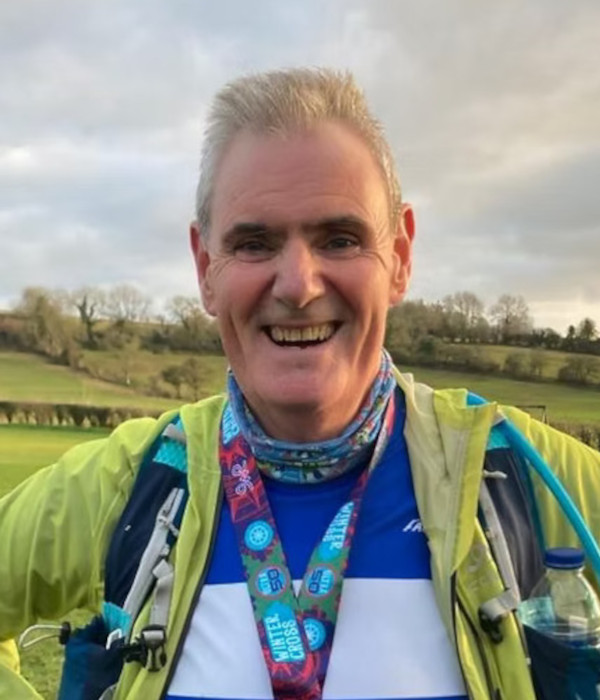

Couch to 5K
What is Couch to 5K?
Couch to 5K is a running plan for absolute beginners. The concept was originally developed by a new runner, Josh Clark, who wanted to help his 50-something mum get off the couch and start running too. The plan covers nine weeks, with three runs each week. There's a rest day between each run, and a varied plan for each of the 9 weeks - starting and progressing gently.
How does Couch to 5K work?
Probably the biggest challenge a new runner faces is not knowing how or where to start. Often when trying to get into exercise, we can overdo it, feel defeated and give up when we're just getting started. Couch to 5K works because it starts with a mix of running and walking to gradually build up your fitness and stamina. Week 1 involves running for just a minute at a time, creating realistic expectations and making the challenge feel achievable right from the start.
Who is Couch to 5K for?
Couch to 5K is for everyone. Whether you've never run before or you just want to get more active, Couch to 5K is a free and easy way of getting fitter and healthier. If you have any health concerns about beginning an exercise regime like Couch to 5K, make an appointment to see a GP and discuss it with them first.
When does it start?
The next C25K will commence in early 2025.
What's the schedule like?
The programme comprises of club sessions on Tuesday and Thursday evenings at 7pm with an additional session at the weekend to complete each week.
What's the cost?
The programme costs £25 for non-club members and includes club membership for the remainder of the membership year (April-April). The programme is free to current club members.
This also includes an opportunity to purchase a club top at the end of week 9 with a 50% reduction.
Get in touch!
PJC's Couch to 5K programme is led by Tony Quinn and assisted by Sue Clarke and Sue Hyson.

Tony Quinn
 Sue Clarke
Sue Clarke
 Sue Hyson
Sue Hyson
To register for the course please email c25k@pjc.org.uk and we'll reply
with an application form you can use to sign-up.
We look forward to seeing you!
A C25K group graduating in 2024